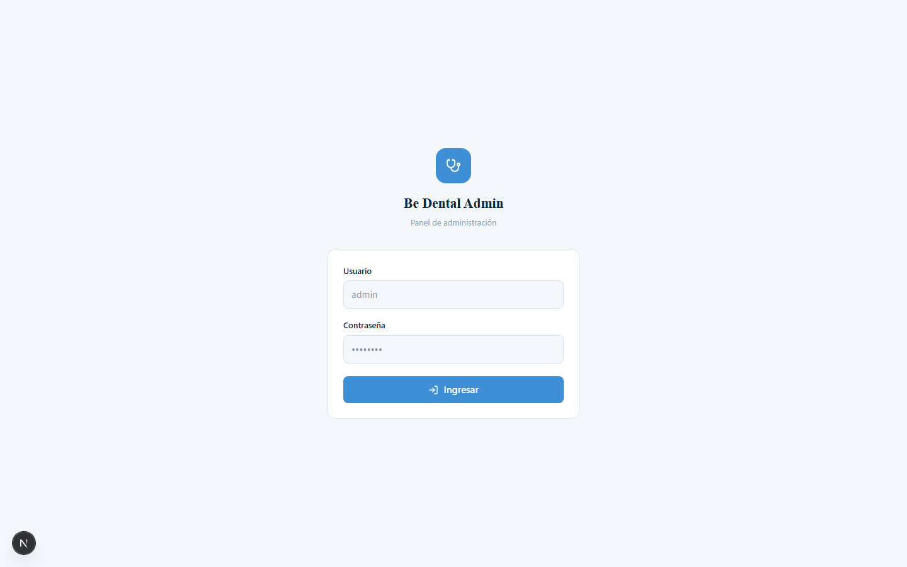
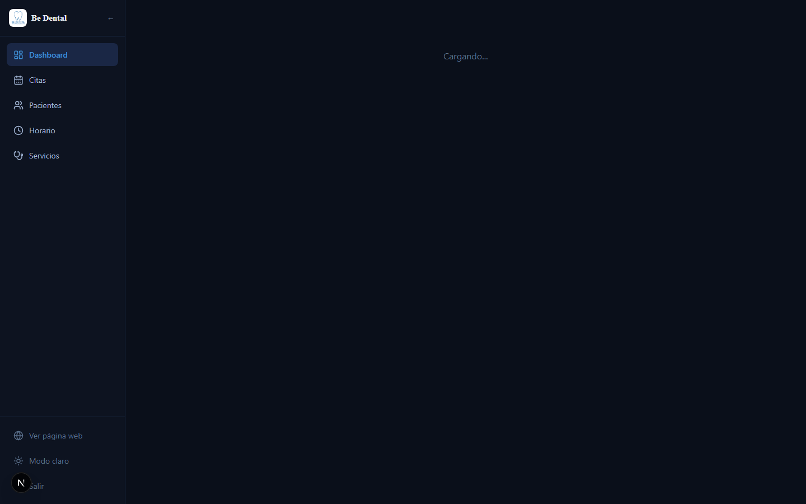
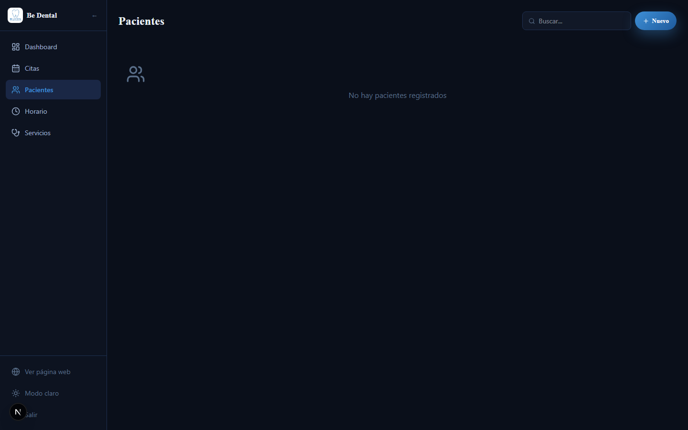
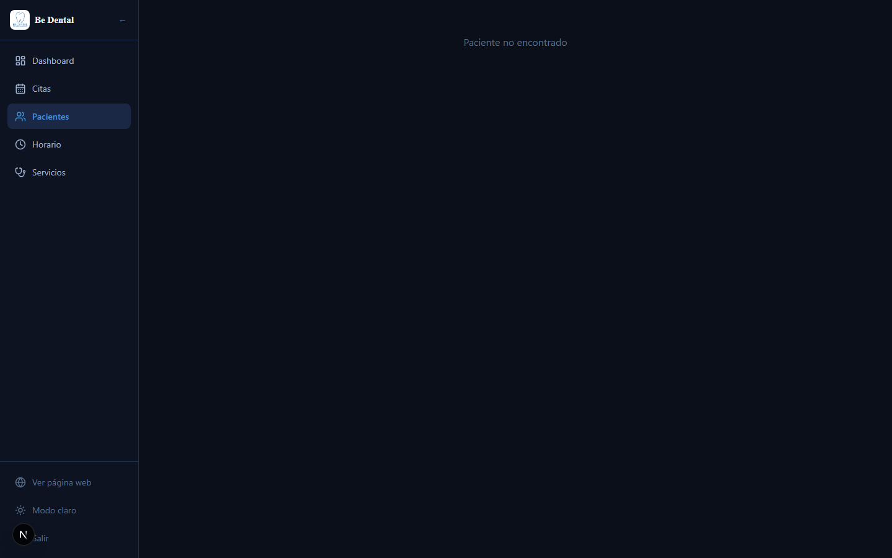
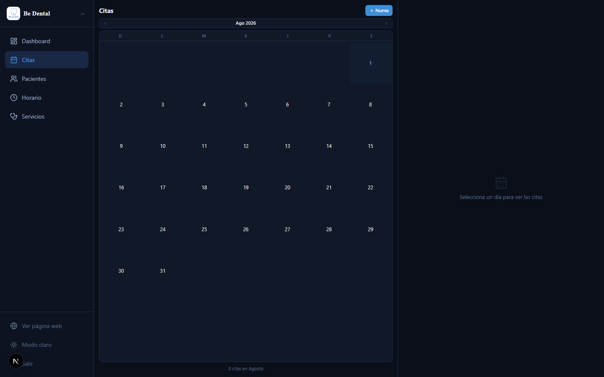
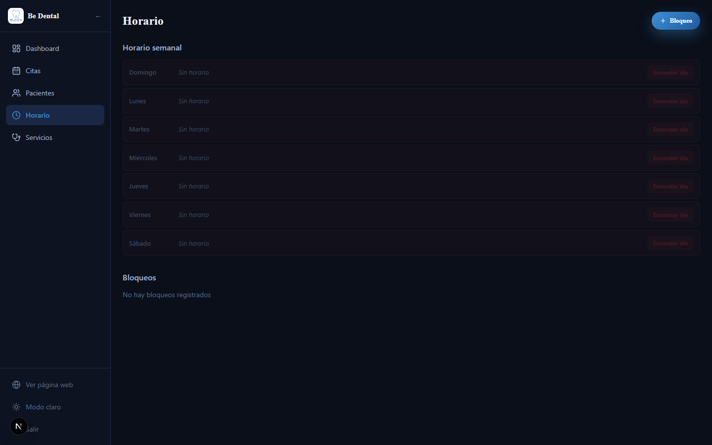
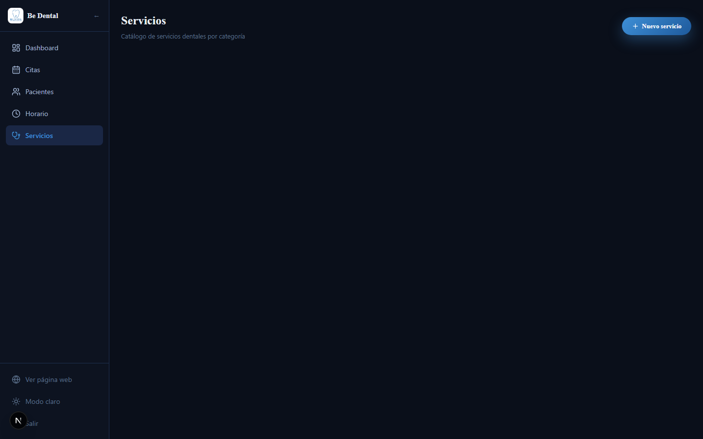
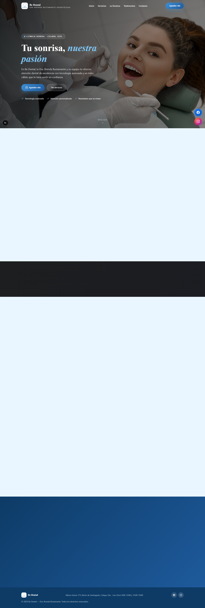
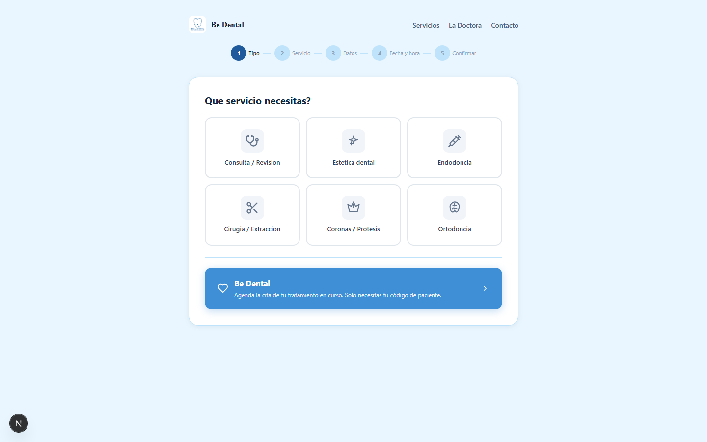

Bienvenida, Dra. Brenda
Este manual te guiara paso a paso en el uso de Be Dental, el sistema digital para gestionar tu consultorio. Aqui podras administrar pacientes, historiales clinicos, citas, horarios y servicios de forma sencilla.
No necesitas conocimientos tecnicos. Todo esta disenado para que puedas usarlo facilmente desde tu computadora o celular.
Acceso rapido: El sistema esta disponible en internet en cualquier momento. Solo necesitas tu usuario y contrasena.
1
Como ingresar al sistema
Para acceder al panel de administracion, sigue estos pasos:
1
Abre el sistemaIngresa a la direccion web que se te proporciono. Veras la pagina principal de Be Dental con informacion del consultorio.
2
Dirigete al loginAgrega /admin/login al final de la direccion web, o solicita el enlace directo al administrador.
3
Ingresa tus credencialesEscribe tu usuario y contrasena en el formulario.
4
Haz clic en "Ingresar"Seras redirigida al Panel Principal (Dashboard).

Pantalla de inicio de sesion. Ingresa tu usuario y contrasena.
Importante: No compartas tu contrasena con nadie. Si la olvidas, contacta al administrador del sistema.
2
El Panel Principal (Dashboard)
Al ingresar, veras el Dashboard. Es tu panel de control con un resumen de todo el consultorio.
Que informacion muestra:
- Pacientes: Total de pacientes registrados.
- Citas hoy: Cuantas citas tienes programadas para el dia de hoy.
- En proceso: Citas que estan siendo atendidas en este momento.
- Ingresos hoy: Dinero recibido por anticipos de citas completadas hoy.

Panel principal con estadisticas y accesos rapidos a todas las secciones.
Accesos rapidos:
Desde el dashboard puedes ir directamente a:
- Citas: Calendario y gestion de citas.
- Pacientes: Lista de pacientes y sus historiales clinicos.
- Horario: Configurar tus dias y horas de atencion.
- Servicios: Catalogo de tratamientos y precios.
Consultar ingresos:
En la parte inferior puedes seleccionar un rango de fechas (Desde / Hasta) y hacer clic en "Consultar" para ver el total de ingresos en ese periodo.
3
Gestionar Pacientes
En esta seccion puedes ver, buscar y agregar pacientes.
Como buscar un paciente:
1
Escribe en el buscadorPuedes buscar por nombre, telefono o codigo (ej: CLI-001).
2
Selecciona al pacienteHaz clic sobre el nombre para ver su ficha completa.
Como agregar un paciente nuevo:
1
Completa el formularioEscribe el nombre y telefono del paciente (minimo).
2
Haz clic en "Agregar"El sistema le asignara un codigo unico automaticamente (CLI-XXX).

Lista de pacientes con buscador y formulario para agregar nuevos.
Ficha del paciente:
Al hacer clic en un paciente, veras:
- Datos personales (telefono, fecha de nacimiento, direccion).
- Boton para Editar la informacion.
- Boton "Nueva Cita" para agendarle directamente.
- Historial de consultas anteriores.
- Formulario completo de Historia Clinica (ver siguiente seccion).
Codigo de paciente: Cada paciente tiene un codigo unico (CLI-001, CLI-002...). Los pacientes pueden usar este codigo para agendar citas en el portal publico.
4
Llenar una Historia Clinica
La historia clinica es el expediente medico de cada paciente. Se llena desde la ficha del paciente.
Secciones de la historia clinica:
1
Datos GeneralesMuestra el nombre, edad y telefono del paciente. Escribe el Motivo de la Consulta.
2
Antecedentes Heredo-Familiares (AHF)Selecciona las enfermedades que tenga el paciente en su familia. Usa los botones para marcar/desmarcar. Si seleccionas "Otro", escribe cual.
3
Antecedentes Personales Patologicos (APP)Responde SI o NO a cada pregunta. Si el paciente es alergico a medicamentos, especifica a cual.
4
EnfermedadesMarca las enfermedades que padece el paciente. Puedes agregar otra si no aparece en la lista.
5
Antecedentes No Patologicos (ANP)Frecuencia de visita al dentista, ultima visita, cepillado diario, uso de accesorios de higiene y habitos.
6
Diagnostico y Plan de TratamientoSelecciona los servicios realizados, ingresa el anticipo, escribe el diagnostico, pronostico, plan de tratamiento y tratamiento realizado.
7
GuardarHaz clic en "Guardar Historia Clinica" al final del formulario. El sistema confirmara que se guardo correctamente.

Formulario completo de historia clinica con todas sus secciones expandibles.
Consejo: Puedes cerrar/abrir cada seccion haciendo clic en el titulo de la misma. Asi es mas facil navegar en formularios largos.
5
Agenda de Citas
El calendario de citas te permite ver, crear y gestionar todas las citas del consultorio.
Como crear una cita:
1
Haz clic en una fechaEn el calendario, selecciona el dia deseado.
2
Selecciona al pacientePuedes buscar un paciente existente o crear uno nuevo. Escribe el nombre y seleccionalo de la lista.
3
Elige la horaEl sistema solo muestra horarios disponibles (no ocupados ni bloqueados).
4
Completa los datosServicio, monto, anticipo y tipo de pago. Todos los campos son opcionales excepto paciente, fecha y hora.
5
Haz clic en "Crear Cita"La cita aparecera en el calendario.
Estados de las citas:
- Pendiente — Recien creada, esperando confirmacion.
- Confirmada — El paciente confirmo su asistencia.
- En Proceso — El paciente esta siendo atendido.
- Completada — La cita ya termino.
- Cancelada — La cita fue cancelada.

Vista de calendario con las citas del dia y panel para crear/editar citas.
Cambiar estado: Haz clic en una cita para ver sus detalles. Desde ahi puedes cambiar el estado (ej: de "Pendiente" a "En Proceso" cuando el paciente llegue).
6
Configurar tu Horario
Aqui defines los dias y horas en que atiendes. Esto controla que horarios aparecen disponibles al agendar citas.
Como configurar:
1
Activa o desactiva diasUsa el interruptor junto a cada dia para activarlo (atiendes) o desactivarlo (no atiendes).
2
Ajusta las horasPuedes modificar la hora de inicio y fin de cada bloque (manana y tarde).
3
Agrega bloqueosSi necesitas bloquear un dia u hora especifica (ej: vacaciones, junta), usa la seccion de bloqueos.

Panel de horario semanal con activacion por dia y gestion de bloqueos.
Bloqueos: Sirven para dias feriados, vacaciones o cualquier fecha donde no atiendas. El sistema no mostrara horarios disponibles en esas fechas/horas bloqueadas.
7
Catalogo de Servicios
Administra la lista de tratamientos que ofreces, con sus precios y duracion.
Como agregar o editar un servicio:
1
Ve a la seccion ServiciosDesde el menu lateral o el acceso rapido del dashboard.
2
Para crear:Haz clic en "Nuevo Servicio", completa el formulario (nombre, categoria, precio, duracion en minutos) y guarda.
3
Para editar:Haz clic en el servicio existente, modifica los campos y guarda los cambios.
4
Para desactivar:Usa el boton de eliminar. El servicio se ocultara sin borrarse permanentemente.

Lista de servicios dentales organizados por categoria.
Categorias: Los servicios se agrupan en: Consultas, Estetica, Endodoncia, Cirugia, Protesis y Ortodoncia. Esto ayuda a organizar mejor tu catalogo.
8
Portal para Pacientes
Be Dental incluye un portal publico donde tus pacientes pueden:
- Ver informacion del consultorio y servicios.
- Agendar su propia cita siguiendo un asistente paso a paso.
Como agenda un paciente desde el portal:
1
El paciente entra al portalVe la pagina principal con informacion del consultorio.
2
Hace clic en "Agendar Cita"Comienza el asistente de 5 pasos.
3
Selecciona servicioElige el tratamiento que necesita.
4
Elige fecha y horaSolo ve los horarios disponibles segun tu configuracion.
5
Ingresa sus datosSi ya es paciente, puede usar su codigo (CLI-XXX). Si es nuevo, se registra con nombre y telefono.

Pagina principal del portal publico que ven los pacientes.

Asistente paso a paso para que los pacientes agenden sus citas.
Ventaja: Los pacientes pueden agendar sus citas sin llamarte. Tu solo revisas el calendario y confirmas. Las citas aparecen automaticamente como "Pendientes".
Be Dental — Tu sonrisa, nuestra pasion
Sistema desarrollado por GLA (GrowLink Agency)